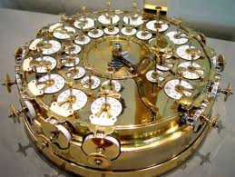

ATÉ A DÉCADA DE 1950
Antes dos Primeiros Computadores:
No fim do ano de 1622, os homens já haviam desenvolvido modos representativos um tanto quanto primitivos, com a função de exibir informações e fazer cálculos simples. O crescente interesse pelas áreas exatas fez com que emergisse a necessidade de novas invenções, a fim de suprir a solução de funções matemáticas mais complexas, sem que fosse tomado tanto tempo
Até 1930, surgiram diversos dispositivos que futuramente fariam parte dos computadores, como as calculadoras mecânicas, de Johann H. Muller, e as eletromagnéticas, de Charles Weiss. Foi aí que em 1936, surgiu a máquina de Turing, precursora para o desenvolvimento dos computadores pessoais.
Calculadora de Helfrich johann von müller
Os computadores da época começaram ocupando uma sala, para depois ocupar apenas uma mesa, e o melhor era o Pilot ACE, desenvolvido por Turing, que fazia parte da National Physical Laboratory, deixando-a antes que a tivesse terminado. A máquina usava uma memória chamada delay line, que atualmente é obsoleta, e operava em 32-bits.